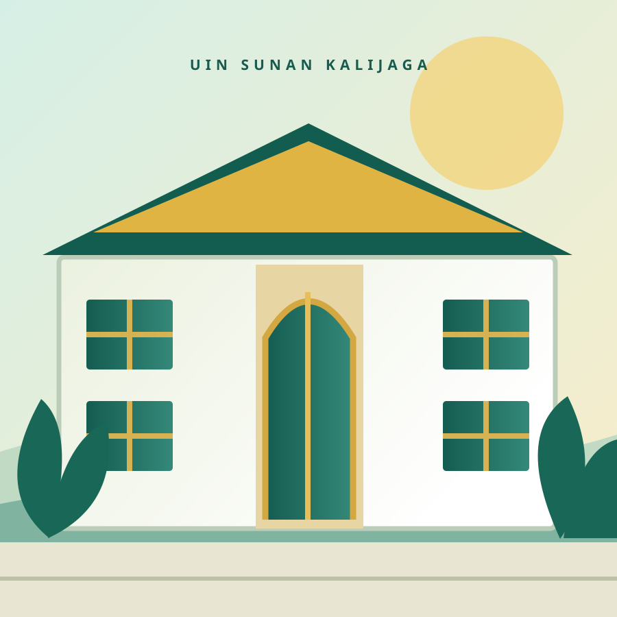

Jelajahi program studi, kegiatan sosialisasi, dan layanan admisi dalam satu tempat. Selengkapnya ↗
SOSIALISASI & PROMOSI · UIN SUNAN KALIJAGA
Langkah Besar Dimulai dari Sini.
Kenali pilihan program studi, jalur masuk, dan peluang masa depanmu di UIN Sunan Kalijaga Yogyakarta.

⌖Yogyakarta, Indonesia
UIN Sunan Kalijaga
✳UIN Sunan Kalijaga
✳ Discover your possibilitiesGeser untuk jelajahi ↓
MULAI PERJALANANMU
Apa yang ingin kamu pelajari?
Temukan program studi yang sesuai dengan minat dan rencana masa depanmu.
PENDIDIKAN UNTUK SETIAP LANGKAHTemukan jenjang
Semua program studi ↗Temukan jenjang
yang tepat untukmu.
SATU PORTAL, BANYAK KEMUDAHANSemua layanan
Semua layanan
dalam satu tempat.
Dari permohonan sosialisasi hingga materi presentasi, layanan Sospro membantu proses berjalan lebih tertata.
Lihat semua layanan ↗SEKILAS KEHIDUPAN KAMPUSRasakan suasana
Rasakan suasana
UIN Sunan Kalijaga.
Potret kampus dan kegiatan yang dapat diperbarui dari dashboard pengelola.
@ADMISI.UINSK
Kunjungi Instagram ↗Cerita terbaru dari Admisi.
Ikuti informasi, kegiatan dan cerita terbaru melalui Instagram Admisi.
◎ ♡ ◯
Terhubung dengan setiap momen.
Koleksi postingan terbaru akan tampil otomatis di sini setelah akun Instagram profesional @admisi.uinsk dihubungkan melalui Meta API.
Lihat Instagram Admisi ↗SIAP MENENTUKAN LANGKAH?Masa depan dimulai
Kunjungi Admisi Resmi ↗Masa depan dimulai
dari pilihan hari ini.
Informasi pendaftaran, jadwal, dan persyaratan final tersedia di situs Admisi resmi.